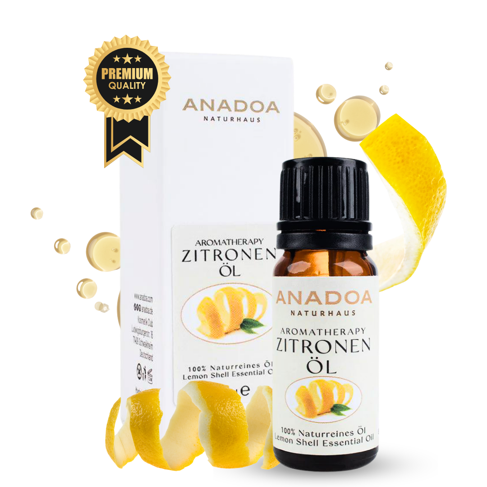

Was ist Zitronenöl?
Zitronenöl (Citrus limon) ist der absolute Inbegriff von Frische, Sauberkeit und guter Laune. Als eines der beliebtesten Zitrusöle in der Aromatherapie fängt es die Energie der Sonne ein. Ein einziger Tropfen genügt, um schwere, trübe Stimmungen sofort aufzuhellen und den Geist in Sekunden zu fokussieren.
Neben seiner extrem starken Wirkung auf die Psyche ist Zitronenöl ein herausragendes Mittel zur Raumluftreinigung. Es wirkt stark antibakteriell und antiviral und ist das perfekte Öl, um im Winter das Immunsystem zu unterstützen oder im Sommer eine eisige Frische im Raum zu verbreiten.
Wo und wie wird Zitronenöl geerntet?
Die Zitronenbäume lieben das mediterrane Klima. Die hochwertigsten und intensivsten Zitronen für die Ölgewinnung stammen oft aus Süditalien (insbesondere Sizilien), Spanien oder auch aus den sonnenverwöhnten Regionen der türkischen Ägäis und des Mittelmeers (z.B. Mersin).
Geerntet wird das ganze Jahr über, wobei die Winterernte oft die qualitativ hochwertigsten Öle hervorbringt. Da das ätherische Öl nicht im Fruchtfleisch, sondern ausschließlich in den kleinen Poren der dicken gelben Schale sitzt, ist eine ungespritzte Bio-Qualität der Früchte zwingend erforderlich.
Kaltpressung: Wie wird Zitronenöl hergestellt?
Im Gegensatz zu Lavendel oder Pfefferminze werden Zitrusöle in der Regel nicht destilliert, sondern kaltgepresst. Diese Methode wird auch als 'Expression' bezeichnet. Die Schalen der Früchte werden maschinell aufgeritzt oder gerieben, und die mikroskopischen Öldrüsen platzen auf. Das austretende Öl wird anschließend in einer Zentrifuge vom restlichen Fruchtwasser getrennt.
Dieser kalte, mechanische Prozess ist der Grund, warum Zitronenöl so unfassbar authentisch und fruchtig riecht – es wurde niemals erhitzt. Für einen einzigen Liter reines Zitronenöl benötigt man die Schalen von etwa 3.000 frischen Zitronen.
Biochemie: Die Wirkstoffe im Zitronenöl
Zitronenöl ist chemisch gesehen ein extrem leichtes, hochflüchtiges Öl. Sein Profil wird von den Monoterpenen beherrscht:
- D-Limonen (60 - 75%): Ein Kraftpaket! Es ist stark stimmungsaufhellend, angstlösend und ein phänomenales natürliches Lösungsmittel für Fette und Harze.
- Beta-Pinen (10 - 15%): Unterstützt die Atemwege und wirkt antiseptisch.
- Furocumarine (z.B. Bergapten): Nur in Spuren enthalten, aber sie verursachen die gefährliche Phototoxizität (Lichtempfindlichkeit) der Haut.
Woran erkennen Sie 100% naturreines Zitronenöl?
Zitrusöle sind günstig, werden aber dennoch oft chemisch gestreckt:
- Bio-Zertifizierung: Da das Öl aus der Schale gepresst wird, finden sich alle Pestizide und Insektizide des konventionellen Anbaus hochkonzentriert im fertigen Öl wieder. Zitronenöl MUSS in Bio-Qualität (aus ungespritzten Schalen) gekauft werden.
- Die Farbe: Echtes kaltgepresstes Zitronenöl hat eine blassgelbe bis leicht grünlich-gelbe Färbung. Ein komplett farbloses Zitronenöl wurde wahrscheinlich destilliert (minderwertig) oder chemisch gereinigt.
- Haltbarkeit: Wenn Ihr Zitronenöl nach 2 Jahren im warmen Badezimmer immer noch 'gut' riecht, ist es wahrscheinlich synthetisch. Echtes Zitrusöl oxidiert und riecht nach einem Jahr muffig-harzig.
Anwendung: Zitronenöl richtig mischen und nutzen
Zitronenöl ist der Meister der Luftreinigung und des Fokus:
- Für höchste Konzentration: 4 Tropfen Zitronenöl + 2 Tropfen Rosmarinöl im Diffuser. Ideal beim Lernen, Arbeiten oder langen Autofahrten. Es macht wach, ohne aufzuregen.
- Als Allzweckreiniger: 10 Tropfen Zitronenöl + 10 Tropfen Teebaumöl in eine Flasche mit Wasser und Essig geben. Desinfiziert Oberflächen und lässt das ganze Haus strahlen.
- Das Immunsystem-Bad: 2 Tropfen Zitronenöl (in Honig emulgiert) im Badewasser wirken vitalisierend. VORSICHT: Niemals mehr nehmen, da Zitrusöle die Haut im warmen Wasser schnell reizen.
Sicherheit und häufige Anwendungsfehler bei Zitronenöl
Hinweis: Achtung vor der Sonne und der Oxidation:
- Phototoxizität (Sonnenbrand-Gefahr): Tragen Sie Zitronenöl (auch verdünnt) NIEMALS auf die Haut auf, wenn Sie in den nächsten 12-24 Stunden in die Sonne oder ins Solarium gehen. Es kommt zu irreparablen Pigmentstörungen und Verbrennungen.
- Oxidation: Altes Zitronenöl ist hochgradig hautreizend. Kaufen Sie kleine Mengen (10ml) und bewahren Sie diese nach Anbruch im Kühlschrank auf.
- Kunststoff-Killer: Tropfen Sie Zitronenöl niemals auf billiges Plastik (z.B. Kunststoff-Diffuser ohne Zulassung). Das enthaltene Limonen frisst sich durch das Plastik.
Bewährte Aromatherapie-Mischungen mit Zitronenöl
Zitrone ist die perfekte, spritzige Kopfnote für nahezu jede Mischung:
- Der 'Guten Morgen' Kick: 3 Tropfen Zitronenöl + 2 Tropfen Pfefferminzöl im Diffuser – ersetzt den Kaffee am Morgen.
- Die 'Krankenzimmer-Reinigung': 4 Tropfen Zitronenöl + 2 Tropfen Eukalyptusöl + 1 Tropfen Teebaumöl in die Raumluft sprühen, um Viren und Bakterien zu bekämpfen.
- Das 'Happy Mood' Roll-On: 3 Tropfen Zitronenöl + 2 Tropfen Lavendelöl in 10 ml Jojobaöl mischen. Auf die Handgelenke auftragen (nur bei bewölktem Wetter oder unter der Kleidung!).
Häufig gestellte Fragen zu Zitronenöl
Ist
Zitronenöl phototoxisch?
Ja, hochgradig! Zitronenöl (Citrus limon) enthält Furocumarine. Wenn diese Stoffe auf die Haut aufgetragen werden und Sie sich anschließend der Sonne (UV-Licht) aussetzen, kommt es zu schweren Hautverbrennungen, Blasenbildung und braunen Pigmentflecken. Wenden Sie Zitronenöl niemals pur auf der Haut an, wenn Sie nach draußen gehen!
Kann ich
Zitronenöl in mein Trinkwasser tropfen?
Zitronenöl ist sehr populär als 'Detox-Wasser'. Da Öl und Wasser sich jedoch nicht mischen, schwimmt das ätherische Öl pur an der Oberfläche und kann die Speiseröhre und den Magen reizen. Wenn überhaupt, sollte es auf einen Löffel Honig getropft und dann erst im Wasser aufgelöst werden.
Wie
unterscheidet sich Zitronenöl von Zitronensaft?
Zitronensaft besteht zu 90% aus Wasser, Fruchtsäuren und Vitamin C (er ist sauer). Zitronenöl wird aus der Schale gepresst. Es enthält überhaupt kein Vitamin C und ist chemisch gesehen nicht sauer (pH-neutral). Es besteht primär aus Limonen, einem starken Lösungsmittel und Stimmungsaufheller.
Wofür
wird Zitronenöl im Haushalt verwendet?
Zitronenöl ist der absolute Meister im Entfernen von Kaugummi, Etiketten-Kleberesten oder Fettflecken. Das enthaltene Limonen ist ein extrem starkes natürliches Lösungsmittel. Zudem ist es stark desinfizierend und wird gern in selbstgemachten Putzmitteln genutzt.
Wie
lange ist Zitronenöl haltbar?
Zitrusöle haben die kürzeste Haltbarkeit aller ätherischen Öle. Einmal geöffnet, oxidieren sie durch den hohen Limonen-Gehalt extrem schnell (innerhalb von 6-9 Monaten). Danach riechen sie oft nach Terpentin und verursachen starke Hautreizungen. Immer im Kühlschrank lagern!